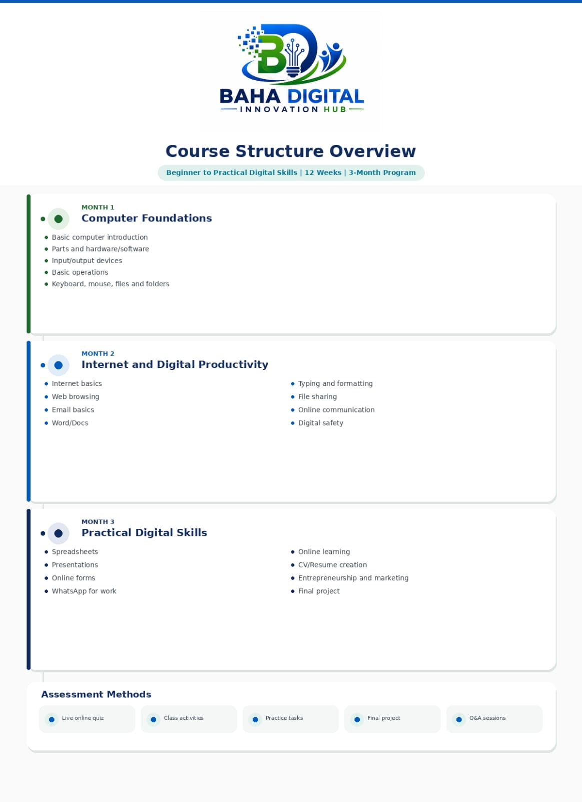
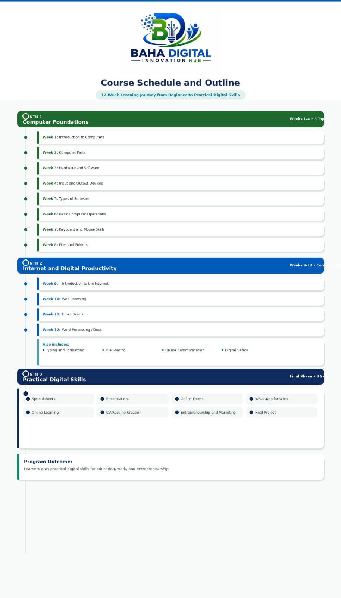

BAHA DIGITAL INNOVATION HUB
Technology for Impact. Innovation for Sustainability.
BAHA Digital Innovation Hub is the digital innovation and skills development arm of BAHA MADZO GADZE FOR CHARITY.
Delivering digital services, technology support, and practical digital skills training that contribute to environmental conservation and community development.About BAHA Digital
BAHA Digital Innovation Hub is a social enterprise initiative of BAHA MADZO GADZE FOR CHARITY that bridges technology, innovation, and sustainable community development.
The hub provides digital services, technology solutions, and skills development opportunities designed to strengthen individuals, support organizations, and create sustainable income for environmental programmes.
By building both an internal and community-facing digital ecosystem, BAHA Digital promotes innovation, practical learning, and long-term impact through accessible and relevant technology.
How BAHA Digital Creates Impact
Tree Planting
Revenue generated through BAHA Digital helps support tree planting and ecosystem restoration initiatives.
Waste Management
Supporting waste segregation, recycling, and environmental cleanup activities in our communities.
Climate Action
Advancing community climate resilience, environmental awareness, and sustainability education.
Community Development
Using digital innovation to expand opportunity, strengthen skills, and support sustainable local development.
Our Core Services
Web
Website Design & Development
IT
Networking & Infrastructure Support
Cloud
Cloud & Productivity Tools
Training
Digital Skills Development
Support
Technical Support & IT Consultancy
Digital Skills Training
BAHA Digital offers practical digital skills training for learners, youth, staff, and community members seeking relevant knowledge for education, work, entrepreneurship, and social impact.
Training may include digital literacy, online communication tools, productivity platforms, Google Workspace basics, and responsible use of technology in everyday work and learning.
BAHA Digital – Course Structure



Explore Services and Training
BAHA Digital provides practical digital services, digital skills development, and technology support that strengthen communities while contributing to environmental conservation and sustainable development.
Explore Courses